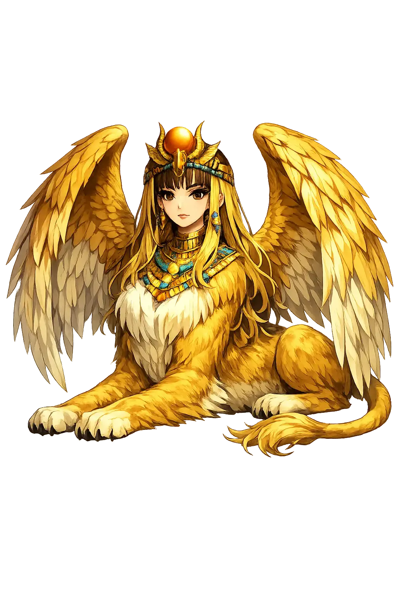
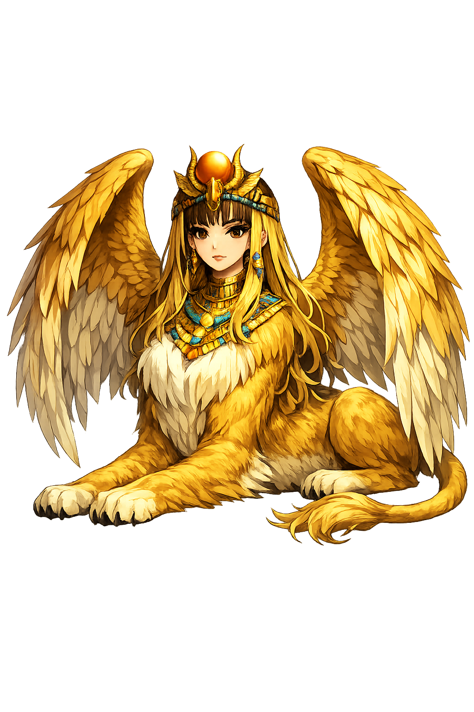

The Authentic Orthography
Riddling Monster · Riddling Monster · Strangler

Unicode restoration and ASCII comparison
Σφίγξ
The name in its original Greek form. Sphínx (Σφίγξ) is attested in the source tradition — “Strangler”. Its aspirated consonants and acute accents carry the full phonetic and orthographic weight of the source tradition.
sphinx
Reduced to plain sphinx, the name loses everything that made it specific: aspirated consonants and acute accents. What remains is an ASCII string that machines can parse but that no longer speaks with its original voice.
Sphínx
The Unicode restoration recovers what ASCII flattened. Sphínx restores aspirated consonants and acute accents, returning the name to its original written dignity. The domain encodes to Punycode, but the browser displays the truth.
Sphínx.com → xn--sphnx-1sa.com
The non-ASCII characters in Sphínx are encoded while the ASCII remains visible. To the DNS, it is Punycode. To humanity, it is Sphínx.
How Sphínx is preserved in writing
A bespoke provenance study for Sphínx is being prepared by the PUNICODEX scholarly team.
Contribute scholarly provenance →How Sphínx was spoken
Guardian, Strangler, and Threshold Terror
The Sphinx is the winged lion-woman who crouched outside Thebes and strangled those who could not answer her riddle. She is not merely a monster but a guardian of thresholds: the creature who bars entry until the traveller proves worthy of understanding.
She perched on a cliff and posed a riddle to every traveller.
'What walks on four feet in the morning, two at noon, and three in the evening?'
Her name means 'the strangling one'; she killed all who failed.
Oedipus answered 'man'; she leaped to her death in shame.
Stories of Sphínx
The Greek Sphinx is a daughter of monstrous parents, sent by Hera to punish Thebes. Her story is inseparable from the tragedy of Oedipus.
The Sphinx was born from Echidna, the half-woman half-serpent, and Typhon, the storm-giant who once challenged Zeus. Her siblings included Cerberus, the Hydra, and the Nemean Lion. She inherited her mother's hybrid form and her father's destructive temper, a perfect engine of ordeal.
Sent by Hera to ravage Thebes after the city's guilt, the Sphinx settled on Mount Phicium and stopped travellers with her riddle. Those who failed she seized and devoured. Thebes was paralysed until Oedipus, the exile from Corinth, approached and answered correctly. The Sphinx, defeated by human intelligence, threw herself from the cliff.
The Greek sphinx owes part of its form to Egypt, where colossal lion-bodied statues with royal human heads guarded temples and tombs for more than two thousand years before the Theban monster was conceived. The name was borrowed, but the riddle and the strangling are Greek inventions.
The Sphinx does not ask for strength or beauty; she asks for understanding. Her riddle is not a trick but a compressed account of human life: four legs, two legs, three legs. To answer is to accept mortality. Oedipus answers and so enters Thebes—and into the very fate he thought he had escaped.
Enter Extended Lore